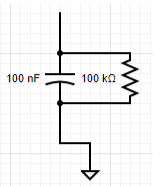

Sound Bite: Our project was a soundar, that allowed us to pinpoint any sound that was heard in front of the machine.
Summary: Firstly a clap or snap would be created then travel through the air into the microphone placed in the x-y plan of our workstation. These waves would be converted to a waveform that had a clean rising edge which was used as a way to detect if a microphone picked up a sound. From here we found out the order of which the microphone picked up the sound first, second, then third by time of flight and combined the first and second microphones into detection pairs. With these pairs we could creat an angle of where the sound came from relative to the center of our setup allowing us to ping on a VGA screen where the sound came from.
Our project's original inspiration was a turret that would be able track someone based on their distance, and then track them. However, we settled on the design of an audio tracker and was able to pinpoint the location of any sound made near the microphones. While we came up with the idea on our own we did find a demo that Professor Van Adams did with an ultrasonic rangefinder, in which we found the mechanical part for controlling the angle and tilt of the turret. In addition we found another group towards the end of our project which we ended up incorporating their algorithm for locating distance from the sound into our final project.
What we did was assume that the first two microphones were parallel as another group from 2013 did. From this assumption we were able to make a right angle between the microphones and the sound, which would allow us to get the hypotenuse, the distance between the two microphones and the time it takes to travel, and the opposite, the distance measured allowing us to get the angle by the inverse sin
The first ISR we have is the PWM ISR, which repeats every time the PWM wraps. The first thing we do is clear the interrupt flag that brought us to the wrap. In the ISR we first have to figure out which two microphones heard the sound first and second. For this, we take the value of cycle after, which is the cycle after the first one heard it. So we take the minimum of the three values for the first value, and then we take the minimum of the other two as the second one. First, we calculate the angle based on the arcsin(cycle*speed if sound/ microphone distance) in which we found that the ratio of speed of sound to our microphone distance was roughly 3/800. Then depending on which two we think it is parallel to, the first two microphones heard we calculated the angle based on that assumption. If it heard microphone one and zero we would say the angle was parallel to pi/3. And added it to pi/3 it if microphone one heard it first and subtracted it from pi/3 if microphone zero heard it first. If the angle is different then we configured it to sweep in either the positive or negative direction. If it sweeps it goes to 2000 the first round, then 6500 next pass, 4000 the last pass, which will sweep the left side. And if it is positive we set sweep - 1 and then pass to 12000, then 6500 on the next pass, then 10000 on the final pass. Then we update the pwm line of the turn PWM channel. Finally, we signal the vga semaphore so the vga can draw.
The next thread is our GPIO thread. We made sure that the thread was always running and the only only thread running where we are continuously polling, each of the three microphones. First we start the thread then go into an infinite while loop as we want it continuously polling. In this while loop we set the the booleans for wether we got a reading from the adc connected to gpio 26, 27 and 28 together and set that boolean to false, and reinitialize the cycle to 0. Howe the adc round robin work works is that it takes the bit and if the bit is high it takes that input and adds it into the round robin cycle, if the first bit is for gpio 26, the second bit is for gpio 27, third bit is for gpio 28, and fourth bit is the gpio 29(the temperature sensor), white the first bit is the leftmost bit. Then we set the adc round robin mode to 7(0111) so that we are round robin polling from the correct gpio pins. Next we are ready to enter our polling while loop. Then we read from the adc and compare it to the correct value store it in the correct gp variable and increment the cycle. It polls this loop until one of the gp variables become true. After we exit this we sit the first cycle to the current cycle, and the last cycle to the current cyle added to the cycle limit. This is the cycle which deem the sound as just not picked up by one of the microphones and sets it to one after the last cycle to indicate that the microphone didn't pick up a sound but still can use it in calculations if necessary. Next we check which ones were picked up and poll the rest accordingly and record the cycle that they were detected in cycle detected, where gpio 26 is stored in the 0th spot in the array gpio 27 is stored in the 1rst spot in the arry and gpio 28 is stored in the 2nd spot in the array. Also when they are all detected(where it hears the sound before the Cycle limit is reached) then we toggle the led, we toggle the LED(by setting the gpio_put to negated boolean value of gpio_get) connected to gpio 15 if gpio 26 is detected, 14 if 27 is detected and 13 if 28 is detected. If they are all detected then we then we set all of the cycle detected to the current cycle, then we toggle the LED, where we toggle the led. If 2 of the gpios are detected then we first set the cycle_detected for the two that were detected and toggle their respective gpio pins. Then we set the respective adc round robin setting so that only the one that we didn't pick up yet is high(1 for 26, 2 for 27, 4 for 28) and then continuously poll for that one. And then if it either detects it or if the cycle is greater than the last cycle(timeout) we end record the respective cycle in the correct spot in the cycle_detected array and move on to the next part. If the current cycle is greater than the current cycle then we don't toggle the respective LED, otherwise we do. The last scenario where we only detect one. For that we would first store the correct cyle in the cycle_detected array and toggle the respective gpio. Then we set the round robin to the correct value(6 for 27 and 28 undetected, 5 for 26 and 28 undetected and 3 for 26 and 27 undecided) then we continue polling the two gpios breaking out of the polling while loop if the adc reading from either gpio breaches the threshold or the cycle exceeds the lastcycle which we break out of the while loop. If both are detected in the same cycle then we toggle then we have the cycle_detected and toggle the respective gpio pins. If the cycle is greater than cycle detected(timed out) then we set both cycle detected but don’t toggle the gpio pins. If only one is detected then we update the cycle detected for that respective pin and toggle that gpio then we poll for the last one like we did before. Now that all of the gpio have a cycle associated with them (either because they timed out or detected something) we regularize our data by creating an array with the difference in first cycle detected and the rest. We first loop over all the values and record the minimum value, then we update the cycle_after array 0 is associated with gpio 26, 1 with 27 and 2 with 28 (cycle_after[x]=cycle_detected[x]-min_value).
The next thread that is running is the VGA protothread. We start off by initializing the semicircle by drawing a circle and the crosshair lines and the label of the graph and then filling in the right half of the circle using the fillrect, drawH, drawV and drawCircle functions in the VGA.c file. Next we wait on the binary semaphore so our value is limited by pwm wrap. First we throttle the VGA so that we can rate limit it so that it doesn't change too fast. Next we erase the current point by filling in the inner circle of the semi circle with black (a black circle with a radius one less than the outer circle with the same center). Next we redraw the lines for the vertical and horizontal lines of the semicircle. Next we calculate the x and y coordinates and store them in the xCoord and yCoord variables, we use the law where cos(angle) *100 and then add it to the x coordinate of the center of the circle. And cos(angle) *100 and add it to the y coordinate of the center of the circle.
We did have a serial thread that was mainly used for debugging. We chose to make all reads and writes non blocking as it wasn't essential for our design and we didn't want it using the cpu unless we needed to read or write something for debugging. In this thread we printed out the microphone readings and the angle and the cycle detected to the screen, and took input that would allow us to change certain variables for testing. If it took in an i it would change the tiltControl, u would change the turnControl pwm channel, and s would change the sweep value.
For the setup we first initialize the VGA thread and overclock the system clock to 25000 kHz, so that we have more cycles for calculations. This does affect the actual values for the PWM duty cycle to get the same duty cycle on the normally clocked cpus(they have to be doubled). Next we initialize the adc and each of the adc gpio we are going to use, 26,27 and 28. We then initialize the round robin to 0111 (7) and set the adc clock divider to 50000 so it runs at 50000 kilohertz. As a result we can ensure that the adc is running faster than the cpu. Next we initialize the gpio 15 14 and 13 for the LEDs used in the thing. In addition we set the 5 and 4 gpio for the PWM channel, for the tilt(originally we were also going to have tilt and figure out the height but were not able to do that with time constraints) and initialize them. Then we set pwm irq to selenium, and enable it and set the handler to the on_pwm_wrap method. Then we set the wrap value to WRAPVAL and the clock divider to CLKDIV. Then we initialize the channel level to slice num to both PWM_CHAN_B and PWM_CHAN_A to 0 and enable the mask. Then we launch for the multicore, which we simply add thread and start the pt schedule. Then we add the serial and vga thread and start the pt schedule on core 0.
The hardware needed to accomplish this project can be replicated if a person have diodes, 330ohm, 1 Mohm, 10kohm, and 100kohm resistors, 0.1 microFarad capacitors, a VGA plug and screen, an UART Plug, 3 adafruit microphones, 3 LEDs and a Desktop PC.
These components make our project a combination of hardware from lab 2, lab 1, and new hardware.We took the UART plug used in every lab, the resistors and wires from Lab 2 about the Boids, and introduced microphones and RC circuits. The UART Plug that was used in every lab was used as a means of debugging our project. We connected it in the same fashion that it has been used in the course by having the transmit line connected to GPIO 1, the receive line connected to GPIO 0, and the ground connected to the RP2040's ground. Continuing from that, we use the VGA plug and screen from labs 2 and 3. HSYNC, VSYNC, VGA Red, VGA Green, and VGA Blue are connected to GPIO 16,17,18,19,20 respectively.
This leads to the newer hardware not used in previous labs throughout this semester. We have three microphones connected to the 3.3V(OUT) pin through a diode, their grounds connected to the RP2040's ground, and their output pins connected to RC circuits which also has the output of that circuit connected to a GPIO pin. The reason for the diode connected to the 3.3V(OUT) pin is to drop the voltage being taken in by the microphones so that the waveform produced by claps or snaps will be within a voltage range that allows us to cleanly detect when a sound is made or not. When we originally used the 3.3V(OUT) pin we were constantly between states of whether or not the Voltage being detected by the RP2040 was considered a 0,1, or undetermined. With that in mind, we made 3 RC circuits that take the output of the waveform and produce a different waveform seen below.
As you can see here the waveform produced has a clean rising edge. This rising edge is the key to detecting if a noise was made. If the rising from the RC circuit is passed roughly 2V we can confidently know a sound was made.
The reason for the LEDs in our design is so that there is visual feedback in terms of which microphone was picked up. We were having issues being able to have our ping show up inaccurate positions on the VGA screen so when we implemented these LED circuits we could see which microphones were detecting noises and found out how to debug our issues.
Below is a block diagram of our project:
Below is a picture of the RC circuit used in our project which takes in the output waveform from the microphone.
Finally is a pic of the LED circuit used in our project to tell which microphone detected a sound. The circuit takes in the voltage produced by its respective pin to turn on the led telling us which microphone picked up a sound.
We went through several ideas for figuring out what model to use for figuring out the angle. Our original idea was to have three microphones in a triangle(insert image), and then have the two on the ground calculate the angle and the average of the two on ground and the one in the air to calculate the tilt angle. However, we quickly realized that this was not the answer. We realized that having two microphones on the x-y plane does not give the direction of the sound so we would need all 3 microphones on the same plane for that to be possible resulting in 4 microphones being needed for tilt and pan control. There was not much time to figure out the implementation of this so we decided to move the 3 microphones onto the x-y plane.
Another approach while the microphones were orientated with 2 on the x-y plane and one on the z-axis was to use all three microphones and try to triangulate the angle through the law of cosines. From there we would isolate for the number of cycles before we heard it at any of the microphones, by isolating s. After that, we would figure out the angle.

Next we tried a greedy method where loss was equal to the difference between all of the distance from a certain point and the time between the three microphones and then minimizing that for every point in our circle radar. This ended up not working and converging to a similar point every time.
The first thing we tried for detecting the amount of cycles was to have a repeating timing interrupt service routine, However, we quickly figured that this did not give a granular enough time as the minimum time between interrupts seemed to be 15 nanoseconds, and we realized we could do better via polling.
Another thing we tried for detecting was setting the gpio as inputs and seeing if they are high, using the same continuous polling system that we are using with the ADC. However, we chose not to use this method as it wasn't constantly triggering and seemed to be within the deadzone where it won't trigger the gpio consistently when sound was made.
Figure 1: This is a picture of our VGA display. It is a semicircle and it displays where the sound is estimated to be with the red dot. This is assuming that the semicircle represents the area in front of the microphones.
Figure 2: Shown above is the waveform outputted by the microphone when a clap is detected.
Figure 3: Shown above is the waveform outputted by the microphone when a snap is detected.
For the speed of execution, we really prioritized the polling by having it be the only process running on the core, which allowed us to keep up with the response time. On the other core, we had the serial protothread and the VGA protothread. However, because the serials were only used to test and debug for the most part the VGA protothread was the only one running. We also chose to overclock the CPU to reduce flicker when we redrew the plot, as we erased the entire plot and then redrew it and the point. When we clapped there was no noticeable delay between when we clapped( or made any other noise) and when it showed up on the screen.
Our project was accurate in the general direction that the sound came from but was not able to update immediately. It was subject to noise if the room wasn't quiet or the sound reflected off of things in the room it would pick that up or it could interfere with the original sound wave. As a result it was accurate under ideal conditions but not as accurate under real conditions.
We enforced safety in our design by constantly monitoring the voltage being outputted by a bench supply when we were in the first iterations of our project and by using an optoisolator when we trying to incorporate the servos into our project. The servos were receiving what seemed to be electrical and audio noise so we moved to using the optoisolator to isolate the power and ground of the microphones and the servos.
In terms of usability from validation from our own experiments and other people, it seemed to be pretty usable and was very good at detecting the right quadrant the sound came from, but was subject to an imperfect environment. The microphones would pick up sound waves from other people talking if the room wasn’t quiet and would also pick up reflective sound waves from several parts of the workstations such as the VGA screen, the workbench, and the computer screen. This noise made it less accurate and but still usable under all conditions and more accurate under perfect ones.
Overall our results met our expectations. We were able to consistently ping where a sound was coming from in terms of the quadrant it was produced in. We did all of our testing in the lab which is not the most ideal area to test or demo the project. The lab is full of reflectors and multiple ways for noise to be produced so the fact that our project was able to consistently ping the correct quadrant and sometimes even the correct spot completely met our expectations for such a non-ideal area. If we were to redo this project we would have added in the servos that we originally wanted in our project. These servos would have added a feature that allowed our project to sweep a quadrant using a laser pointer so that physical feedback from that setup mixed with the software feedback of the VGA screen would have made a very interesting project. We also would have elevated the microphones in some way so that the microphones would not pick up the noise from the servos as they moved. We also would have allotted more time for us to figure out how to best calculate the angle of the sound so that the VGA would be able to show the correct position of the sound instead of just the quadrant.
If we were to redo this project we would have added in the servos that we originally wanted in our project. These servos would have added a feature that allowed our project to sweep a quadrant using a laser pointer so that physical feedback from that setup mixed with the software feedback of the VGA screen would have made a very interesting project. We also would have elevated the microphones in some way so that the microphones would not pick up the noise from the servos as they move. We also would have allotted more time for us to figure out how to best calculate the angle of the sound so that the VGA would be able to show the correct position of the sound instead of just the quadrant.
We did not reuse code from another group but we did use an idea that was from a group that took this course previously. In the 2013 section of the previous projects, there is a group's project called "Acoustic Impulse Marker" by Adam Wrobel and Michael Grisanti which is essentially our project but with some minor differences. Since we were having issues from our previous attempts of trying to get our project to consistently ping sound in their correct regions we looked through their explanation of how they used the microphone and immediately saw the efficiency of their assumption rather than ours. This is where we got the idea to use two microphones and use that pair to detect where the sound came from. This assumption resulted in the most consistent way of detecting sounds.
We did not use any code from the public domain. All code produced by our group came from our group.
We did not use reverse engineering in our project. We did try to use it to find better ways of detecting the direction of the sound but we were struggling to find a way to reverse engineer devices that uses sound in the same way we do so we put a halt on that.
We did not have to sign a non-disclosure agreement since all the parts that we used came from the lab. This also made our project essentially $0.
We believe there are no patent opportunities for our project. Since our project is not anything new and MANY devices do what we did, we feel there are no patent opportunities in our project.
"The group approves this report for inclusion on the course website."
"The group approves the video for inclusion on the course youtube channel."
While we both came up with ideas and strategies for both hardware and software together, Dev implemented most of the hardware and Anthony implemented most of the software. This way we were able to increase productivity as we could build the hardware and code the software simultaneously